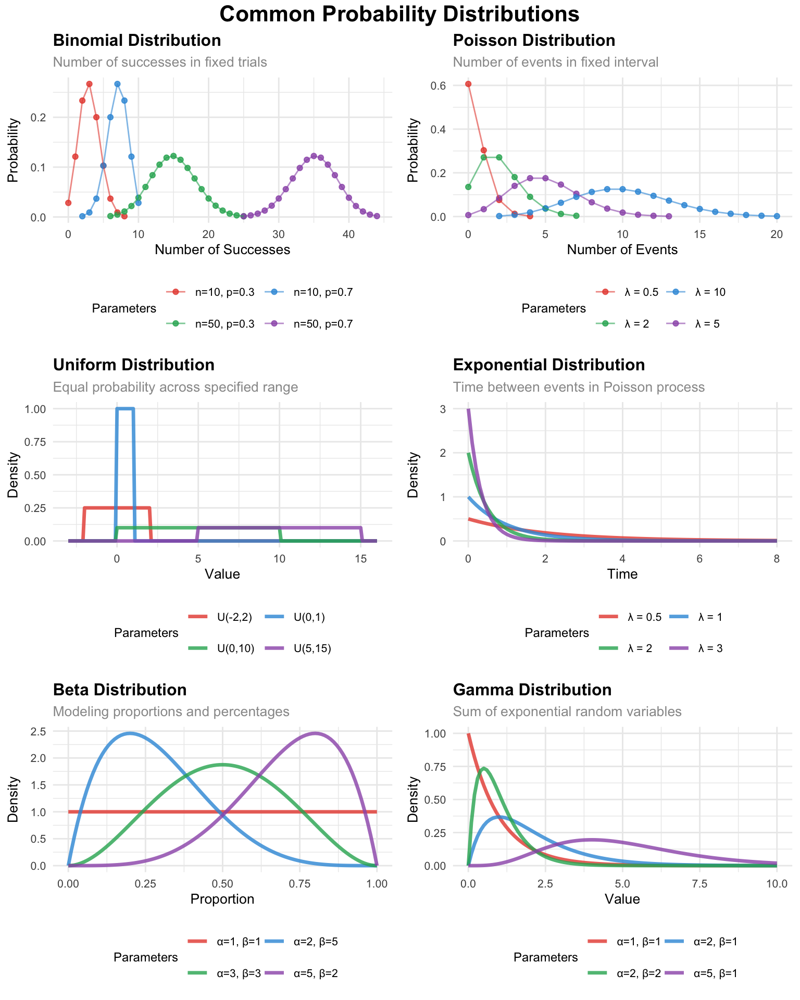

Packages used for R examples
library(ggplot2)
library(dplyr)
library(tidyr)
library(stringr)
library(ggpubr)Claudius Gräbner-Radkowitsch
June 15, 2026
June 15, 2026
This page is a reference companion to Essentials of Probability Theory for Statistics, which introduces the core concepts of random variables, probability distributions, the normal distribution, and expected values. Read that page first if you are new to probability theory.
The normal distribution is a fundamental tool in statistics — but it is far from the only one. Many phenomena encountered in empirical research follow other patterns, and using an inappropriate distribution leads to misleading analyses.
This page gives you a reference overview of the most common probability distributions you will encounter, when each is appropriate, and how to work with them in R. The guidance on choosing the right distribution connects directly to the research design principles that run throughout the other pages in the statistics recap track.
The binomial distribution models the number of successes in a fixed number of independent trials, each with the same probability of success.
Parameters:
Business applications:
Example: If 30% of customers typically purchase after viewing a product demo, and you show demos to 50 customers, the binomial distribution tells you the probability of getting exactly 12, 15, or 20 purchases.
The Poisson distribution models the number of events occurring in a fixed interval when events happen independently at a constant average rate.
Parameters:
Business applications:
Example: If your website averages 3 crashes per month, the Poisson distribution helps you calculate the probability of experiencing 0, 1, 2, or 5 crashes in a given month.
The uniform distribution assigns equal probability to all values within a specified range, representing complete uncertainty within known bounds.
Parameters:
Business applications: Monte Carlo simulations, modeling worst-case scenarios where you know only the possible range, random sampling for A/B testing, representing complete uncertainty about timing within a known window.
Example: If project completion time could be anywhere between 30 and 50 days with no particular preference, the uniform distribution represents this complete uncertainty within the known bounds.
The exponential distribution models the time between events in a Poisson process, or the duration until something happens.
Parameters:
Business applications:
Example: If customers arrive at your service desk following a Poisson process, the exponential distribution models how long you will wait between consecutive arrivals.
The beta distribution is highly flexible and bounded between 0 and 1, making it ideal for modeling proportions and percentages.
Parameters:
Business applications:
Example: When modeling the proportion of budget different departments might receive, the beta distribution can represent various scenarios from equal allocation to highly skewed distributions.
The gamma distribution models positive continuous values and includes the exponential distribution as a special case. It is particularly useful for modeling sums of exponential random variables.
Parameters:
Business applications:
Example: Total project time when the project consists of several independent phases, each following an exponential distribution, results in a gamma distribution.
custom_theme <- theme_minimal() +
theme(
plot.title = element_text(size = 12, face = "bold"),
plot.subtitle = element_text(size = 10, color = "gray60"),
axis.title = element_text(size = 10),
axis.text = element_text(size = 8),
legend.position = "bottom",
legend.title = element_text(size = 9),
legend.text = element_text(size = 8)
)
colors <- c("#e74c3c", "#3498db", "#27ae60", "#9b59b6")
# 1. BINOMIAL DISTRIBUTION
binomial_data <- expand_grid(
scenario = c("n=10, p=0.3", "n=10, p=0.7", "n=50, p=0.3", "n=50, p=0.7"),
x = 0:50
) |>
mutate(
n = case_when(str_detect(scenario, "n=10") ~ 10, str_detect(scenario, "n=50") ~ 50),
p = case_when(str_detect(scenario, "p=0.3") ~ 0.3, str_detect(scenario, "p=0.7") ~ 0.7),
probability = ifelse(x <= n, dbinom(x, n, p), 0),
probability = ifelse(probability > 0.001, probability, NA)
) |>
filter(!is.na(probability))
p1 <- ggplot(binomial_data, aes(x = x, y = probability, color = scenario)) +
geom_point(size = 1.5, alpha = 0.8) +
geom_line(alpha = 0.6) +
scale_color_manual(values = colors) +
labs(title = "Binomial Distribution", subtitle = "Number of successes in fixed trials",
x = "Number of Successes", y = "Probability", color = "Parameters") +
custom_theme +
guides(color = guide_legend(nrow = 2, byrow = TRUE))
# 2. POISSON DISTRIBUTION
poisson_data <- expand_grid(lambda = c(0.5, 2, 5, 10), x = 0:25) |>
mutate(
scenario = paste0("λ = ", lambda),
probability = dpois(x, lambda),
probability = ifelse(probability > 0.001, probability, NA)
) |>
filter(!is.na(probability))
p2 <- ggplot(poisson_data, aes(x = x, y = probability, color = scenario)) +
geom_point(size = 1.5, alpha = 0.8) +
geom_line(alpha = 0.6) +
scale_color_manual(values = colors) +
labs(title = "Poisson Distribution", subtitle = "Number of events in fixed interval",
x = "Number of Events", y = "Probability", color = "Parameters") +
custom_theme +
guides(color = guide_legend(nrow = 2, byrow = TRUE))
# 3. UNIFORM DISTRIBUTION
uniform_data <- expand_grid(
scenario = c("U(0,1)", "U(0,10)", "U(5,15)", "U(-2,2)"),
x = seq(-3, 16, 0.1)
) |>
mutate(
a = case_when(scenario == "U(0,1)" ~ 0, scenario == "U(0,10)" ~ 0,
scenario == "U(5,15)" ~ 5, scenario == "U(-2,2)" ~ -2),
b = case_when(scenario == "U(0,1)" ~ 1, scenario == "U(0,10)" ~ 10,
scenario == "U(5,15)" ~ 15, scenario == "U(-2,2)" ~ 2),
density = ifelse(x >= a & x <= b, 1 / (b - a), 0)
)
p3 <- ggplot(uniform_data, aes(x = x, y = density, color = scenario)) +
geom_line(linewidth = 1.2, alpha = 0.8) +
scale_color_manual(values = colors) +
labs(title = "Uniform Distribution", subtitle = "Equal probability across specified range",
x = "Value", y = "Density", color = "Parameters") +
custom_theme +
guides(color = guide_legend(nrow = 2, byrow = TRUE))
# 4. EXPONENTIAL DISTRIBUTION
exponential_data <- expand_grid(lambda = c(0.5, 1, 2, 3), x = seq(0, 8, 0.1)) |>
mutate(scenario = paste0("λ = ", lambda), density = dexp(x, lambda))
p4 <- ggplot(exponential_data, aes(x = x, y = density, color = scenario)) +
geom_line(linewidth = 1.2, alpha = 0.8) +
scale_color_manual(values = colors) +
labs(title = "Exponential Distribution", subtitle = "Time between events in Poisson process",
x = "Time", y = "Density", color = "Parameters") +
custom_theme +
guides(color = guide_legend(nrow = 2, byrow = TRUE))
# 5. BETA DISTRIBUTION
beta_data <- expand_grid(
scenario = c("α=1, β=1", "α=2, β=5", "α=5, β=2", "α=3, β=3"),
x = seq(0, 1, 0.01)
) |>
mutate(
alpha = case_when(scenario == "α=1, β=1" ~ 1, scenario == "α=2, β=5" ~ 2,
scenario == "α=5, β=2" ~ 5, scenario == "α=3, β=3" ~ 3),
beta = case_when(scenario == "α=1, β=1" ~ 1, scenario == "α=2, β=5" ~ 5,
scenario == "α=5, β=2" ~ 2, scenario == "α=3, β=3" ~ 3),
density = dbeta(x, alpha, beta)
)
p5 <- ggplot(beta_data, aes(x = x, y = density, color = scenario)) +
geom_line(linewidth = 1.2, alpha = 0.8) +
scale_color_manual(values = colors) +
labs(title = "Beta Distribution", subtitle = "Modeling proportions and percentages",
x = "Proportion", y = "Density", color = "Parameters") +
custom_theme +
guides(color = guide_legend(nrow = 2, byrow = TRUE))
# 6. GAMMA DISTRIBUTION
gamma_data <- expand_grid(
scenario = c("α=1, β=1", "α=2, β=1", "α=5, β=1", "α=2, β=2"),
x = seq(0, 10, 0.1)
) |>
mutate(
shape = case_when(str_detect(scenario, "α=1") ~ 1, str_detect(scenario, "α=2") ~ 2,
str_detect(scenario, "α=5") ~ 5),
rate = case_when(str_detect(scenario, "β=1") ~ 1, str_detect(scenario, "β=2") ~ 2),
density = dgamma(x, shape = shape, rate = rate)
)
p6 <- ggplot(gamma_data, aes(x = x, y = density, color = scenario)) +
geom_line(linewidth = 1.2, alpha = 0.8) +
scale_color_manual(values = colors) +
labs(title = "Gamma Distribution", subtitle = "Sum of exponential random variables",
x = "Value", y = "Density", color = "Parameters") +
custom_theme +
guides(color = guide_legend(nrow = 2, byrow = TRUE))
annotate_figure(
ggarrange(p1, p2, p3, p4, p5, p6, ncol = 2, nrow = 3, common.legend = FALSE, align = "hv"),
top = text_grob("Common Probability Distributions", color = "black", face = "bold", size = 16)
)
| Name | Type | Parameters | Density | Probability | Quantile | Random |
|---|---|---|---|---|---|---|
| Normal | Continuous | μ, σ | dnorm(x, mean, sd) |
pnorm(q, mean, sd) |
qnorm(p, mean, sd) |
rnorm(n, mean, sd) |
| Binomial | Discrete | n, p | dbinom(x, size, prob) |
pbinom(q, size, prob) |
qbinom(p, size, prob) |
rbinom(n, size, prob) |
| Poisson | Discrete | λ | dpois(x, lambda) |
ppois(q, lambda) |
qpois(p, lambda) |
rpois(n, lambda) |
| Uniform | Continuous | a, b | dunif(x, min, max) |
punif(q, min, max) |
qunif(p, min, max) |
runif(n, min, max) |
| Exponential | Continuous | λ | dexp(x, rate) |
pexp(q, rate) |
qexp(p, rate) |
rexp(n, rate) |
| Beta | Continuous | α, β | dbeta(x, shape1, shape2) |
pbeta(q, shape1, shape2) |
qbeta(p, shape1, shape2) |
rbeta(n, shape1, shape2) |
| Gamma | Continuous | α, β | dgamma(x, shape, rate) |
pgamma(q, shape, rate) |
qgamma(p, shape, rate) |
rgamma(n, shape, rate) |
Three things are worth noting about this table:
Every distribution follows the same four-function pattern: d, p, q, r followed by the distribution name abbreviation. Once you learn this pattern, you can work with any distribution.
Discrete vs. continuous maps onto counting vs. measuring: Discrete distributions (binomial, Poisson) deal with counting scenarios that naturally produce whole number outcomes. Continuous distributions handle measurement scenarios where outcomes can take any value within a range.
Parameter names in R sometimes differ from mathematical notation: For instance, where we write \(\mu\) for the mean mathematically, R uses the more explicit mean parameter. The binomial distribution uses size instead of \(n\) for the number of trials.
Selecting appropriate distributions depends on several factors:
Nature of your data:
Underlying process:
Available information: Do you know the range, average rate, or shape characteristics? What does theory or prior research suggest about the process?
Practical considerations: Can you estimate the distribution parameters from your data? Does the distribution have a reasonable interpretation in your context?
Understanding these distributions expands your analytical toolkit beyond the normal distribution. While the Central Limit Theorem often makes normal distribution methods appropriate for sample means, recognizing situations where other distributions better model the underlying phenomena leads to more accurate analyses and better insights.
The choice of distribution also connects to the concept of model assumptions that becomes important in regression analysis and other advanced techniques. Different distributions embody different assumptions about the data-generating process, and choosing appropriately helps ensure your statistical inferences are valid.
@misc{gräbner-radkowitsch2026,
author = {Gräbner-Radkowitsch, Claudius},
editor = {Gräbner-Radkowitsch, Claudius},
title = {Common {Probability} {Distributions:} {A} {Reference}
{Overview}},
date = {2026-06-15},
url = {https://euf-methodology-hub.netlify.app/resources/statistics/common-probability-distributions},
langid = {en}
}
---
title: "Common Probability Distributions: A Reference Overview"
description: "An overview of probability distributions beyond the normal: binomial, Poisson, uniform, exponential, beta, and gamma — with guidance on when to use each and how to work with them in R."
author: "Claudius Gräbner-Radkowitsch"
date: 2026-06-15
date-modified: 2026-06-15
image: ../../assets/images/placeholder.png
learning-objectives:
- "Identify when to use binomial, Poisson, uniform, exponential, beta, or gamma distributions based on data type and the generating process"
- "Use R's `d*`, `p*`, `q*`, and `r*` functions for each distribution"
- "Select an appropriate probability distribution for a given research or business context"
categories:
- statistics
- R
- BA
- MA
- reading
level:
- BA
- MA
content-type: reading
citation:
type: entry
container-title: "Methods Hub"
title: "Common Probability Distributions: A Reference Overview"
editor:
- name: "Claudius Gräbner-Radkowitsch"
url: https://euf-methodology-hub.netlify.app/resources/statistics/common-probability-distributions
---
```{r}
#| code-summary: "Packages used for R examples"
#| message: false
#| warning: false
library(ggplot2)
library(dplyr)
library(tidyr)
library(stringr)
library(ggpubr)
```
::: {.callout-tip}
## Companion page
This page is a reference companion to [Essentials of Probability Theory for Statistics](probability-theory-essentials.qmd), which introduces the core concepts of random variables, probability distributions, the normal distribution, and expected values. Read that page first if you are new to probability theory.
:::
# Why Go Beyond the Normal Distribution?
The normal distribution is a fundamental tool in statistics — but it is far from the only one. Many phenomena encountered in empirical research follow other patterns, and using an inappropriate distribution leads to misleading analyses.
This page gives you a reference overview of the most common probability distributions you will encounter, when each is appropriate, and how to work with them in R. The guidance on choosing the right distribution connects directly to the research design principles that run throughout the other pages in the [statistics recap track](../../tracks/statistics-recap.qmd).
# Discrete Distributions
## Binomial Distribution
The binomial distribution models the **number of successes in a fixed number of independent trials**, each with the same probability of success.
**Parameters:**
- $n$ — number of trials
- $p$ — probability of success per trial
**Business applications:**
- Quality control (number of defective items in a batch)
- Marketing (number of customers who respond to an email campaign)
- Employee behavior (number of employees who attend optional training)
- Survey research (number of positive responses)
> **Example**: If 30% of customers typically purchase after viewing a product demo, and you show demos to 50 customers, the binomial distribution tells you the probability of getting exactly 12, 15, or 20 purchases.
## Poisson Distribution
The Poisson distribution models the **number of events occurring in a fixed interval** when events happen independently at a constant average rate.
**Parameters:**
- $\lambda$ (lambda) — the average rate of occurrence
**Business applications:**
- Customer arrivals (number of customers entering a store per hour)
- System failures (number of server crashes per month)
- Call center volume (number of support calls per day)
- Defect counting in manufacturing
> **Example**: If your website averages 3 crashes per month, the Poisson distribution helps you calculate the probability of experiencing 0, 1, 2, or 5 crashes in a given month.
# Continuous Distributions
## Uniform Distribution
The uniform distribution assigns **equal probability to all values within a specified range**, representing complete uncertainty within known bounds.
**Parameters:**
- $a$ — minimum value
- $b$ — maximum value
**Business applications:** Monte Carlo simulations, modeling worst-case scenarios where you know only the possible range, random sampling for A/B testing, representing complete uncertainty about timing within a known window.
> **Example**: If project completion time could be anywhere between 30 and 50 days with no particular preference, the uniform distribution represents this complete uncertainty within the known bounds.
## Exponential Distribution
The exponential distribution models the **time between events in a Poisson process**, or the duration until something happens.
**Parameters:**
- $\lambda$ — rate parameter
**Business applications:**
- Customer service (time until next service request)
- Product reliability (time until failure)
- Queue management (waiting times)
- Modeling time between purchases
> **Example**: If customers arrive at your service desk following a Poisson process, the exponential distribution models how long you will wait between consecutive arrivals.
## Beta Distribution
The beta distribution is highly flexible and bounded between 0 and 1, making it ideal for **modeling proportions and percentages**.
**Parameters:**
- $\alpha$ (alpha)
- $\beta$ (beta)
**Business applications:**
- Market share analysis
- Project completion percentages
- Conversion rates
- Budget allocation proportions
- Modeling success probabilities when you have prior information
> **Example**: When modeling the proportion of budget different departments might receive, the beta distribution can represent various scenarios from equal allocation to highly skewed distributions.
## Gamma Distribution
The gamma distribution models **positive continuous values** and includes the exponential distribution as a special case. It is particularly useful for modeling sums of exponential random variables.
**Parameters:**
- $\alpha$ (shape) and $\beta$ (rate), or equivalently $\alpha$ (shape) and $\theta$ (scale)
**Business applications:**
- Project duration modeling when projects consist of multiple phases
- Income distribution analysis
- Insurance claim amounts
- Inventory management (modeling demand over lead time)
> **Example**: Total project time when the project consists of several independent phases, each following an exponential distribution, results in a gamma distribution.
# Visual Overview {#fig-distributions}
```{r}
#| label: fig-distributions
#| fig-cap: "Overview of common probability distributions in business analytics."
#| fig-height: 10
#| fig-width: 8
#| message: false
#| warning: false
custom_theme <- theme_minimal() +
theme(
plot.title = element_text(size = 12, face = "bold"),
plot.subtitle = element_text(size = 10, color = "gray60"),
axis.title = element_text(size = 10),
axis.text = element_text(size = 8),
legend.position = "bottom",
legend.title = element_text(size = 9),
legend.text = element_text(size = 8)
)
colors <- c("#e74c3c", "#3498db", "#27ae60", "#9b59b6")
# 1. BINOMIAL DISTRIBUTION
binomial_data <- expand_grid(
scenario = c("n=10, p=0.3", "n=10, p=0.7", "n=50, p=0.3", "n=50, p=0.7"),
x = 0:50
) |>
mutate(
n = case_when(str_detect(scenario, "n=10") ~ 10, str_detect(scenario, "n=50") ~ 50),
p = case_when(str_detect(scenario, "p=0.3") ~ 0.3, str_detect(scenario, "p=0.7") ~ 0.7),
probability = ifelse(x <= n, dbinom(x, n, p), 0),
probability = ifelse(probability > 0.001, probability, NA)
) |>
filter(!is.na(probability))
p1 <- ggplot(binomial_data, aes(x = x, y = probability, color = scenario)) +
geom_point(size = 1.5, alpha = 0.8) +
geom_line(alpha = 0.6) +
scale_color_manual(values = colors) +
labs(title = "Binomial Distribution", subtitle = "Number of successes in fixed trials",
x = "Number of Successes", y = "Probability", color = "Parameters") +
custom_theme +
guides(color = guide_legend(nrow = 2, byrow = TRUE))
# 2. POISSON DISTRIBUTION
poisson_data <- expand_grid(lambda = c(0.5, 2, 5, 10), x = 0:25) |>
mutate(
scenario = paste0("λ = ", lambda),
probability = dpois(x, lambda),
probability = ifelse(probability > 0.001, probability, NA)
) |>
filter(!is.na(probability))
p2 <- ggplot(poisson_data, aes(x = x, y = probability, color = scenario)) +
geom_point(size = 1.5, alpha = 0.8) +
geom_line(alpha = 0.6) +
scale_color_manual(values = colors) +
labs(title = "Poisson Distribution", subtitle = "Number of events in fixed interval",
x = "Number of Events", y = "Probability", color = "Parameters") +
custom_theme +
guides(color = guide_legend(nrow = 2, byrow = TRUE))
# 3. UNIFORM DISTRIBUTION
uniform_data <- expand_grid(
scenario = c("U(0,1)", "U(0,10)", "U(5,15)", "U(-2,2)"),
x = seq(-3, 16, 0.1)
) |>
mutate(
a = case_when(scenario == "U(0,1)" ~ 0, scenario == "U(0,10)" ~ 0,
scenario == "U(5,15)" ~ 5, scenario == "U(-2,2)" ~ -2),
b = case_when(scenario == "U(0,1)" ~ 1, scenario == "U(0,10)" ~ 10,
scenario == "U(5,15)" ~ 15, scenario == "U(-2,2)" ~ 2),
density = ifelse(x >= a & x <= b, 1 / (b - a), 0)
)
p3 <- ggplot(uniform_data, aes(x = x, y = density, color = scenario)) +
geom_line(linewidth = 1.2, alpha = 0.8) +
scale_color_manual(values = colors) +
labs(title = "Uniform Distribution", subtitle = "Equal probability across specified range",
x = "Value", y = "Density", color = "Parameters") +
custom_theme +
guides(color = guide_legend(nrow = 2, byrow = TRUE))
# 4. EXPONENTIAL DISTRIBUTION
exponential_data <- expand_grid(lambda = c(0.5, 1, 2, 3), x = seq(0, 8, 0.1)) |>
mutate(scenario = paste0("λ = ", lambda), density = dexp(x, lambda))
p4 <- ggplot(exponential_data, aes(x = x, y = density, color = scenario)) +
geom_line(linewidth = 1.2, alpha = 0.8) +
scale_color_manual(values = colors) +
labs(title = "Exponential Distribution", subtitle = "Time between events in Poisson process",
x = "Time", y = "Density", color = "Parameters") +
custom_theme +
guides(color = guide_legend(nrow = 2, byrow = TRUE))
# 5. BETA DISTRIBUTION
beta_data <- expand_grid(
scenario = c("α=1, β=1", "α=2, β=5", "α=5, β=2", "α=3, β=3"),
x = seq(0, 1, 0.01)
) |>
mutate(
alpha = case_when(scenario == "α=1, β=1" ~ 1, scenario == "α=2, β=5" ~ 2,
scenario == "α=5, β=2" ~ 5, scenario == "α=3, β=3" ~ 3),
beta = case_when(scenario == "α=1, β=1" ~ 1, scenario == "α=2, β=5" ~ 5,
scenario == "α=5, β=2" ~ 2, scenario == "α=3, β=3" ~ 3),
density = dbeta(x, alpha, beta)
)
p5 <- ggplot(beta_data, aes(x = x, y = density, color = scenario)) +
geom_line(linewidth = 1.2, alpha = 0.8) +
scale_color_manual(values = colors) +
labs(title = "Beta Distribution", subtitle = "Modeling proportions and percentages",
x = "Proportion", y = "Density", color = "Parameters") +
custom_theme +
guides(color = guide_legend(nrow = 2, byrow = TRUE))
# 6. GAMMA DISTRIBUTION
gamma_data <- expand_grid(
scenario = c("α=1, β=1", "α=2, β=1", "α=5, β=1", "α=2, β=2"),
x = seq(0, 10, 0.1)
) |>
mutate(
shape = case_when(str_detect(scenario, "α=1") ~ 1, str_detect(scenario, "α=2") ~ 2,
str_detect(scenario, "α=5") ~ 5),
rate = case_when(str_detect(scenario, "β=1") ~ 1, str_detect(scenario, "β=2") ~ 2),
density = dgamma(x, shape = shape, rate = rate)
)
p6 <- ggplot(gamma_data, aes(x = x, y = density, color = scenario)) +
geom_line(linewidth = 1.2, alpha = 0.8) +
scale_color_manual(values = colors) +
labs(title = "Gamma Distribution", subtitle = "Sum of exponential random variables",
x = "Value", y = "Density", color = "Parameters") +
custom_theme +
guides(color = guide_legend(nrow = 2, byrow = TRUE))
annotate_figure(
ggarrange(p1, p2, p3, p4, p5, p6, ncol = 2, nrow = 3, common.legend = FALSE, align = "hv"),
top = text_grob("Common Probability Distributions", color = "black", face = "bold", size = 16)
)
```
# R Functions Reference {#tbl-distributions}
: Overview of probability distributions and their R functions {#tbl-distributions}
| Name | Type | Parameters | Density | Probability | Quantile | Random |
|------|------|------------|---------|-------------|----------|--------|
| Normal | Continuous | μ, σ | `dnorm(x, mean, sd)` | `pnorm(q, mean, sd)` | `qnorm(p, mean, sd)` | `rnorm(n, mean, sd)` |
| Binomial | Discrete | n, p | `dbinom(x, size, prob)` | `pbinom(q, size, prob)` | `qbinom(p, size, prob)` | `rbinom(n, size, prob)` |
| Poisson | Discrete | λ | `dpois(x, lambda)` | `ppois(q, lambda)` | `qpois(p, lambda)` | `rpois(n, lambda)` |
| Uniform | Continuous | a, b | `dunif(x, min, max)` | `punif(q, min, max)` | `qunif(p, min, max)` | `runif(n, min, max)` |
| Exponential | Continuous | λ | `dexp(x, rate)` | `pexp(q, rate)` | `qexp(p, rate)` | `rexp(n, rate)` |
| Beta | Continuous | α, β | `dbeta(x, shape1, shape2)` | `pbeta(q, shape1, shape2)` | `qbeta(p, shape1, shape2)` | `rbeta(n, shape1, shape2)` |
| Gamma | Continuous | α, β | `dgamma(x, shape, rate)` | `pgamma(q, shape, rate)` | `qgamma(p, shape, rate)` | `rgamma(n, shape, rate)` |
Three things are worth noting about this table:
1. **Every distribution follows the same four-function pattern**: `d`, `p`, `q`, `r` followed by the distribution name abbreviation. Once you learn this pattern, you can work with any distribution.
2. **Discrete vs. continuous maps onto counting vs. measuring**: Discrete distributions (binomial, Poisson) deal with counting scenarios that naturally produce whole number outcomes. Continuous distributions handle measurement scenarios where outcomes can take any value within a range.
3. **Parameter names in R sometimes differ from mathematical notation**: For instance, where we write $\mu$ for the mean mathematically, R uses the more explicit `mean` parameter. The binomial distribution uses `size` instead of $n$ for the number of trials.
# Choosing the Right Distribution
Selecting appropriate distributions depends on several factors:
**Nature of your data:**
- Discrete vs. continuous outcomes
- Bounded vs. unbounded range
- Can values be negative?
**Underlying process:**
- Counting events → Binomial or Poisson
- Measuring durations or wait times → Exponential or Gamma
- Modeling proportions → Beta
- Many small factors combining → Normal
**Available information:** Do you know the range, average rate, or shape characteristics? What does theory or prior research suggest about the process?
**Practical considerations:** Can you estimate the distribution parameters from your data? Does the distribution have a reasonable interpretation in your context?
Understanding these distributions expands your analytical toolkit beyond the normal distribution. While the Central Limit Theorem often makes normal distribution methods appropriate for sample means, recognizing situations where other distributions better model the underlying phenomena leads to more accurate analyses and better insights.
The choice of distribution also connects to the concept of model assumptions that becomes important in regression analysis and other advanced techniques. Different distributions embody different assumptions about the data-generating process, and choosing appropriately helps ensure your statistical inferences are valid.